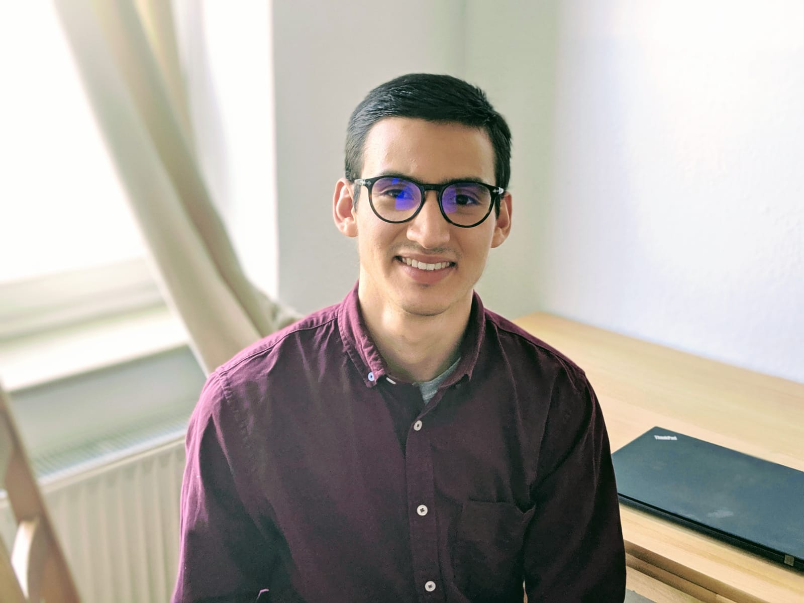

I am a M.Sc. student (2019) in Autnomous Systems at the University of Applied Sciences Bonn-Rhein-Sieg. I do applied machine learning research at Fraunhofer SCAI supervised by Jochen Garcke and Paul Ploeger. Before starting my M.Sc. program I interned at the Monterrey Institute of Technology (ITESM) as a machine learning research assistant under Prof. Ramon Brena. I have a Bachelor's degree in Physics from the Autonomous University of Baja California in Mexico. I wrote my thesis on Trapped Ion Quantum Engineering at the National Institute for Standards (PTB) in Germany supervised by Prof. Christian Ospelkaus.
